Simulatiom on Fundamental Analysis for Visible-Light Communication System using LED Lights
白光LED具有亮度高、稳定性好、能耗低、使用期限长等优点，故LED被视为下一代照明灯光的材料。我们实验室已经提出了一种利用白光LED组成的室内Visible-Light Communication。在已提出的系统中，LED不仅用于房间照明，还用于组成无线光通信系统。总体上看，我们在房间里安装了多个LED，所以必须考虑它们之间的光程差。在本篇论文中，我们考虑了干涉和反射的影响，在数值分析的基础之上，我们证明了该系统可以作为下一代室内通信系统。
LED便具有照明和通信的双重功能，并且有许多有趣的应用，其机理在于LED的快速开关变换和在自由空间中的可见光调制。我们提出的系统具有以下的优点：
- 由于使用高功率分布式照明设备，光信息在整个房间的传播过程中阴影很少；
- 白光LED照明设备方便安装，且很美观。
LED有两个基本的属性：光强和传输光功率。
总体而言，照度是由ISO进行的标准化，根据这套标准，办公室工作需要的照度为300～1500 lx。
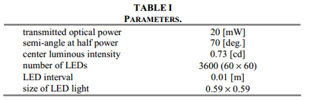
接下来我们将利用数值分析的方法来讨论系统的可能应用场景。假定某房间用于场景分析，尺寸为5m×5m×3m，灯具按照下图的方式安装。
作为光路传输的LED灯安装在距离地面高度为2.5m处，桌面的高度为0.85m，用户终端放置在桌面上。共4套LED照明设备，每个LED灯由3600个（60×60）LED单元构成。LED单元间距为1cm，相应地，LED芯片半功率处的半角为70度，LED芯片的中心光强为0.73cd，LED的传输光功率为20mW。
仿真结果
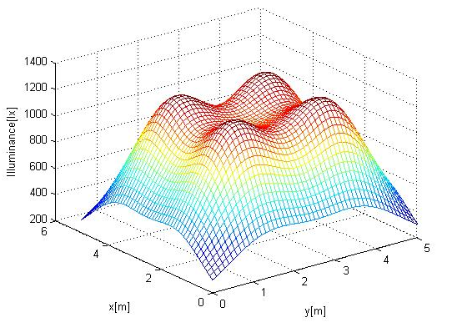
照明度分布
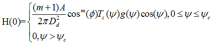
接收功率分布A为PD探测器的物理区域，Dd为发送端和接收端之间的距离，ψ是入射角，φ是辐照度角,Ts(ψ)是光滤波器的增益，g(ψ)是集光器的增益。ΨC表示在接收器中视角的宽度。
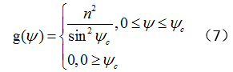
接收功率分布如下
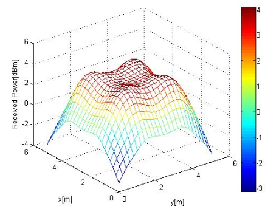
接收功率由直射路径的直流信道增益Hd(0)和反射路径的直流增益Href(0)
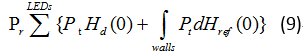
第一次反射的直流增益为
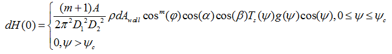
反射接收功率分布仿真如下
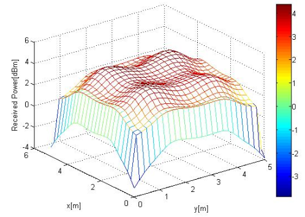
无线光通道模型可以表示为：
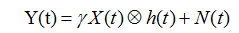
考虑OOK调制方案，在OOK中，有光传输时比特编码为1，无光传输时比特编码为0，我们将假定一个矩形脉冲波形的持续时间为一个比特周期。误比特率BER：
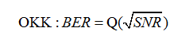
其中
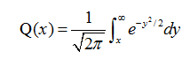
传输时延
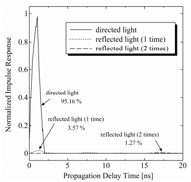
在这里,k是玻耳兹曼常量，T_k是绝对温度,G是开环电压增益,η是单位面积光探测器的固定电容,Γ是场效应晶体管通道噪声系数,g_m是场效应晶体管的跨导，I3 = 0.0868。在我们的数值分析的例子中，我们选择以下参数值T=295K,γ=0.54A/W,G=10, g_m=30mS, Γ=1.5,η=112pF/cm2, B=100Mb/s,我们假设的背景电流来自直合光
信噪比的分布如图
直射光有码间干扰的SNR分布
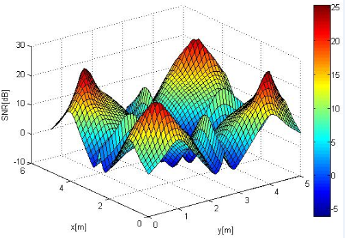
反射光有码间干扰的SNR分布
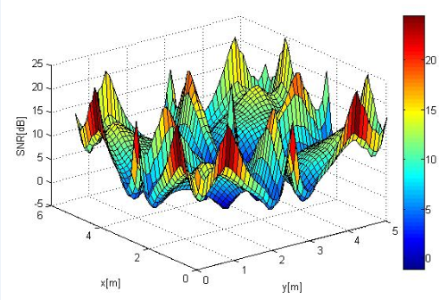
在Visible-Light Communication中，同时满足光学照明和光学传输的要求是很重要的。我们讨论了这些要求，并展示了设计的例子。同时我们知道这个系统可以同时实现照明和通信。接下来,我们讨论了反射和码间干扰的影响。码间干扰取决于数据率和接收机的视野范围。
许多光源可以替代LED。Visible-Light Communication很容易使高数据率成为可能。因此,Visible-Light Communication有希望成为下一代的室内通信系统。进一步的研究将增加LED照明通信的可行性。
... 访问链接